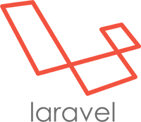
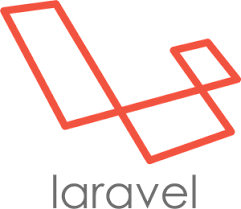
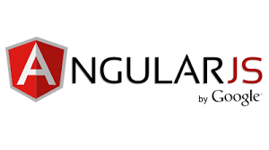
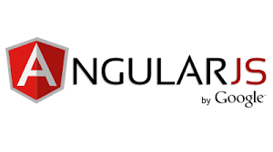

Tentang Saya

Nama Lengkap: Muhammad Hitsam Sidi Tiammar
Tempat/Tanggal Lahir: Bandung, 5 Maret 1996
Hobby: Browsing
Pendidikan:
- SD Polisi 4 Bogor
- SDN Gunung 03 Pagi
- SMP 11 Jakarta
- SMA Global Islamic School
- Binus University
Moto: Jika kita ingin mencapai tujuan kita, tetaplah percaya pada diri sendiri walaupun orang lain tidak percaya pada kita


 

 
